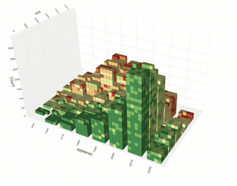

August 15, 2024 — Steven Drucker's SandDance (⌨️) is both twenty years in the future and timeless. SandDance allows humans to see and interact with data the way you interact with particles in the real world. Steven sat down with us to talk about the origins of SandDance and his 29 years at Microsoft Research. Thank you for your time Steven!

Visualizing PLDB using SandDance.
SandDance really comes from a convergence of a lot of different ideas. My background originally was neuroscience, then robotics, then computer graphics.
I had built particle systems. Karl Sims is a good friend of mine doing brilliant animated evolutionary creatures. I've always been fascinated by lots of individual collective things, creating some structure out of that.
I was doing a bunch visualization stuff and finding people often were misunderstanding aggregations. Simpson's paradox. Bayes rule.
One of the misunderstandings I was having when I was telling stories with data, people would kind of get confused when you show percentages and absolutes. It would be better if you showed them something that was physically realizable. If you could actually say, let's stack these individual particles so that you actually show sums.
When you see these quantities in absolute numbers of things, it's like "oh my god, that's so clear, why didn't anybody ever show that to me before?"
I have a colleague who's built something very similar: MorphCharts.
The impetus was always the same: let's help people understand the information better. It's great to take those raw rows of a dataset and say each point represents a row.
It really matched well for people's understanding of "what happens when I filter...rearrange...group in different ways...highlight."
A grammar of interactions.
You're limited by the number of pixels. When you get to that many particles, you need a metaphor.
By giving people alternate ways of looking at the data to validate the results.
If you're doing a pivot, let's see that. If you're doing a filter, let's see that. And that way you can actually see that the operations are happening the way you want. So it's a visual explanation of the thing.
Part of it is a chance to meet with new and different people with different perspectives and constantly be re-energized by interns and projects.
A developer, when they hear a problem the first thing they think is "how do I solve this architecturally?"
The first thing a researcher tends to look at is "what was done before?"
Both things need to be done to a certain extent.
You have to start building things to see what's going to happen.
But it's helpful to see what was done before and what was the context.
I am driven by "oh my god that's going to fundamentally change the way I do things."
Image source. Thank you for your time Steven!
This interview lightly edited for clarity and length.